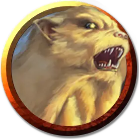

Златожор
Aurumvorax
Маленький Монстр, без мировоззрения

Класс Доспеха 15 (природный доспех)
Хиты 36 (8к6 + 8)
Скорость 30 футов, копая 20 футов
| мод | спас | ||
|---|---|---|---|
| СИЛ | 14 | +2 | +4 |
| ЛОВ | 13 | +1 | +1 |
| ТЕЛ | 12 | +1 | +3 |
| мод | спас | ||
|---|---|---|---|
| ИНТ | 3 | −4 | −4 |
| МДР | 12 | +1 | +1 |
| ХАР | 6 | −2 | −2 |
Навыки Восприятие +3, Скрытность +3
Иммунитет к состояниям окаменение
Чувства тёмное зрение 60 футов, пассивное Восприятие 13
Опасность 2 (450 опыта)
Бонус мастерства +2
Особенности
Прокладывание туннеля. Златожор может копать сквозь сплошной камень со скоростью копания, уменьшенной вдвое, оставляя за собой туннель диаметром 5 футов.
Действия
Мультиатака. Златожор совершает одну атаку Укусом и две атаки Когтями.
Укус. . Рукопашная атака оружием: +4 к попаданию, досягаемость 5 футов, одна цель. Попадание: 6 (1к8 + 2) колющего урона. Если целью является существо, носящее доспех любого типа, златожор восстанавливает 4 (1к6 + 1) хита.
Коготь. . Рукопашная атака оружием: +5 к попаданию, досягаемость 5 футов, одна цель. Попадание: 5 (1к6 + 2) рубящего урона. Если целью является существо Среднего размера или меньше, оно становится схваченным (Сл высвобождения 12). Пока этот захват не закончится, златожор не может использовать свою атаку Когтями против другой цели, а когда он перемещается, он может тащить за собой захваченное существо, при этом скорость златожора не уменьшается вдвое.
Описание
Златожор — восьминогий охотник, похожий на барсука. Эти агрессивные всеядные животные нападают на любую добычу, которую, по их мнению, они превосходят, устраивая засады даже на существ вдвое большего размера. Они дополняют свой рацион металлом, будь то обработанный или руда, но особое влечение они испытывают к золоту. Эта диета придает меху златожору золотистый блеск.
В одиночку или небольшими группами златожоры копают глубоко в поисках драгоценных металлов. Такие исследования часто приводят их к конфликту с подземными поселениями. Поскольку защитники таких сообществ часто носят металлическую броню, златожоры отдают приоритет атаке бронированных врагов — независимо от того, металлическая эта броня или нет.
Златожор
В раннем возрасте златожоры сотрудничают с братьями, сёстрами и родителями — вожаками своих логовищ, прорывая туннели в поисках металла и другой добычи, роющей норы. Повзрослев, златожоры охотятся самостоятельно, отвоёвывая территории, которые они яростно защищают.